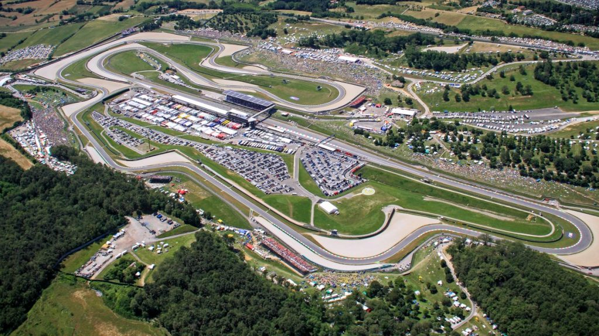
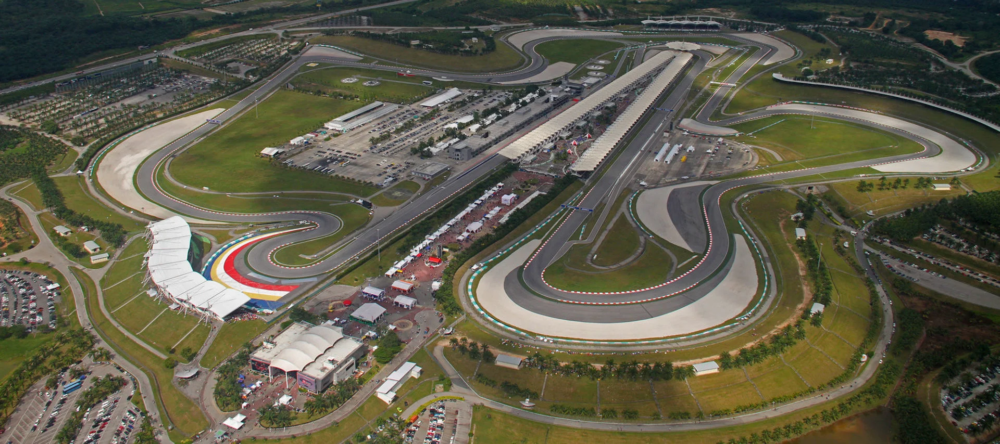
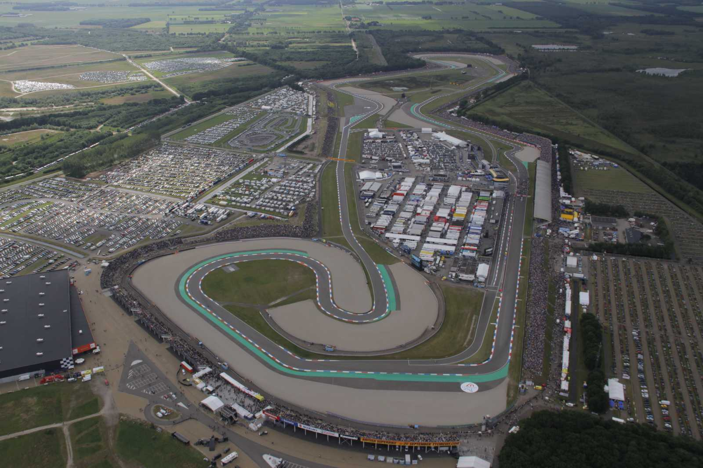
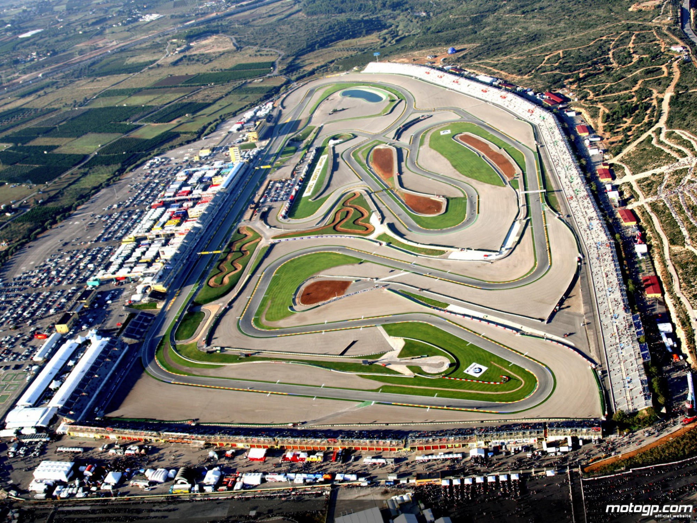
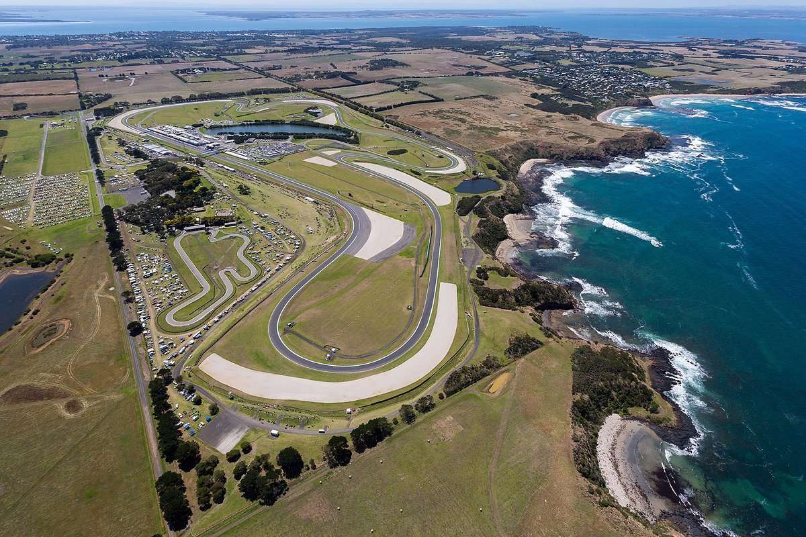
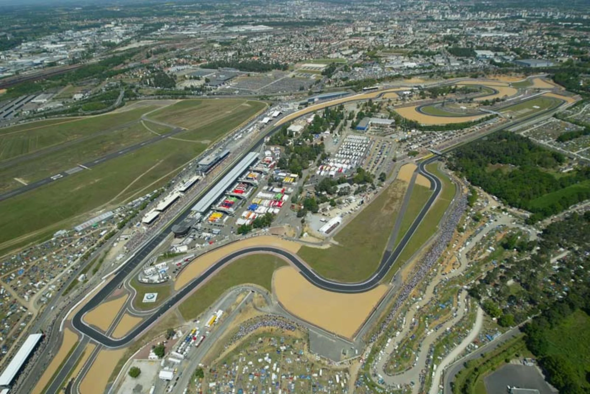

Circuits Légendaires du MotoGP
Mugello
Un circuit rapide et technique situé en Italie, célèbre pour ses longues lignes droites et ses virages serrés.

Sepang
Le circuit de Sepang en Malaisie est connu pour sa chaleur étouffante et ses virages rapides, offrant un défi unique aux pilotes.

Assen
Surnommé le "Temple de la vitesse", le circuit d'Assen aux Pays-Bas est célèbre pour ses virages fluides et rapides.

Valence
Le dernier circuit de la saison en Espagne, où se jouent souvent les titres de champion.

Phillip Island
Ce circuit australien est adoré des pilotes pour ses paysages magnifiques et son tracé unique en bord de mer.

Le Mans
Le légendaire circuit français, connu pour ses courses palpitantes sous la pluie et ses virages emblématiques.
